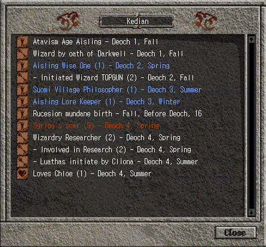

|  |
The Legend Clicking on the "book icon" will reveal an Aisling's legend. This is a record of their achievements, trials, and tribulations as they progress through Temuair. Text in white are ordinary events; text in blue are legendary events; and text in orange represents trials (trying to become a Demagogue) or horrible events (annoyances or Sgrios's Scars). You can learn a lot about an Aisling by reading their legend. Do they mentor often? Are they well known for their works? The legend is a synopsis of the character. |